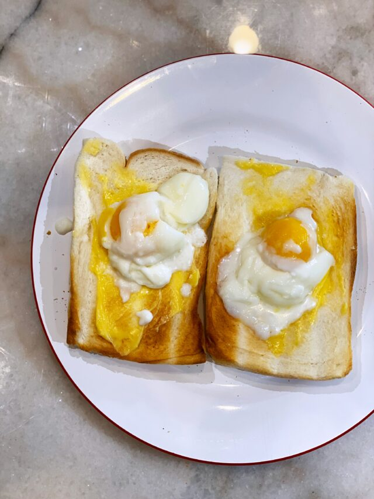

A quintessential Malaysian Breakfast

Feels like a warm hug on a Monday morning. Best enjoyed by dipping a kaya-laden toast into a cup of perfectly half boiled eggs
Ingredients:
- Egg
- Soy sauce
- Pepper
- Bread
- Kaya
Steps:
- Boil room temperature eggs for 2 minutes
- Toast bread
- Crack half boiled eggs into a cup
- Add salt and pepper to eggs
- Spread kaya over toasted bread
Back to Homepage